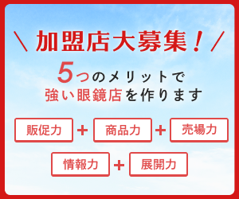

<div class="sidebar column is-3">
  <section class="sidebar-images">
    <a href="">
      
    </a>
    <a href="">
      
    </a>
    <a href="">
      
    </a>
  </section>
  <section class="sidebar-menu-section section">
    <div class="control search-wrap">
      <input class="input" type="text" placeholder="サイト内を検索">
      <button type="submit"></button>
    </div>
    <div class="sidebar-menu menu">
      <div class="sidebar-menu-label menu-label">
        
        <span>コラムカテゴリー一覧</span>
      </div>
      <ul class="category-menu-list menu-list">
        <li><a href="#">経営者コラム</a></li>
        <li><a href="#">企画販促コラム</a></li>
        <li><a href="#">主催者コラム</a></li>
        <li><a href="#">特選品コラム</a></li>
      </ul>
    </div>
    <div class="sidebar-menu menu">
      <div class="sidebar-menu-label menu-label">
        
        <span>加盟店一覧</span>
      </div>
      <ul class="sidebar-menu-list menu-list">
        <li class="sidebar-menu-label-second">
          <p>北海道・東北</p>
        </li>
        <li><a href="#">サカイ</a></li>
      </ul>
      <ul class="sidebar-menu-list menu-list">
        <li class="sidebar-menu-label-second">
          <p>関東</p>
        </li>
        <li><a href="#">シティメガネ城田</a></li>
        <li><a href="#">イナリヤ</a></li>
        <li><a href="#">メガネのセイコー（北習志野店）</a></li>
        <li><a href="#">銀美堂時計総本店</a></li>
      </ul>
      <ul class="sidebar-menu-list menu-list">
        <li class="sidebar-menu-label-second">
          <p>中部</p>
        </li>
        <li><a href="#">キタオカ</a></li>
        <li><a href="#">ミヤコヤ（十日町市 妻有SC店）</a></li>
        <li><a href="#">マルイチ</a></li>
        <li><a href="#">ミヤコヤ（長岡市）</a></li>
      </ul>
      <ul class="sidebar-menu-list menu-list">
        <li class="sidebar-menu-label-second">
          <p>関西</p>
        </li>
        <li><a href="#">プロショップツチヤ</a></li>
      </ul>
      <ul class="sidebar-menu-list menu-list">
        <li class="sidebar-menu-label-second">
          <p>中国</p>
        </li>
        <li><a href="#">ナカダヤ</a></li>
        <li><a href="#">せと</a></li>
        <li><a href="#">コンドウ</a></li>
        <li><a href="#">めがね高島屋</a></li>
      </ul>
    </div>
  </section>
  <section class="sidebar-images">
    <a href="">
      
    </a>
  </section>
</div>